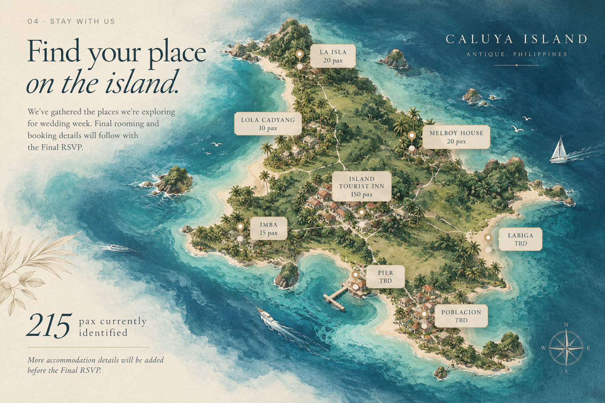

LOCAL CELEBRATION
Caluya Festival
The wedding week will coincide with Caluya Festival — a chance for guests to experience the island's celebration.
BABYCAKES · CALUYA ISLAND · ANTIQUE · SUNSET BY THE SEA
A beach wedding at sunset, surrounded by island days, family, friends, and the celebrations of Caluya.
This isn't just a wedding day.
It's a whole week together.
We're inviting our people to make the journey to Caluya and stay for the moments around the wedding, too.
Prenup photos and film will live here later. For now, this space is ready for them.

Come for the
island.
Caluya will be part of the celebration itself. During wedding week, guests can experience the island and join local festivities alongside us.

Expect a slower rhythm: travel days, local food, festival moments, beach time, and the wedding at sunset.
The wedding week will coincide with Caluya Festival — a chance for guests to experience the island's celebration.
Guests can also join Tatusan Festival during the same wedding week.
Our wedding day will be by the beach, timed for sunset, with a white carpet ceremony setting.
Find your place
on the island.
We've gathered the places we're exploring for wedding week. Final rooming and booking details will follow with the Final RSVP.


by DioSa© Lumière
or Faithful Scents · by DioSa© Lumière
A little piece of the year with us.
A local-inspired wedding-week keepsake.
Will you spend
the week with us?
This first RSVP helps us estimate the number of guests joining us in Caluya and plan the wedding experience accordingly.
A Final RSVP with more complete travel, accommodation, and guest details will be sent approximately 6 months before the wedding.
Your preliminary RSVP has been submitted.